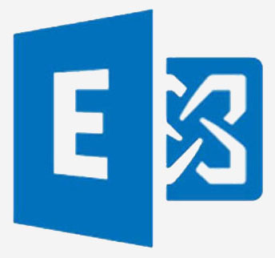
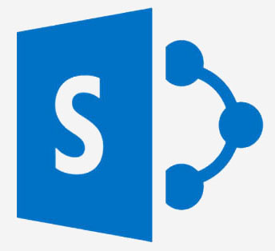
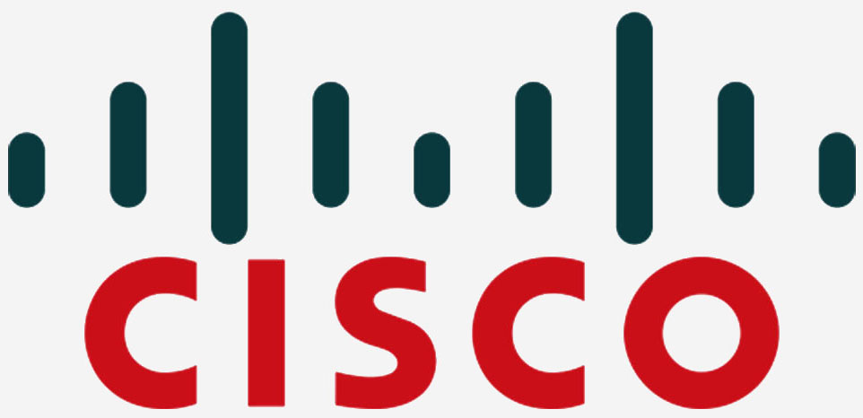
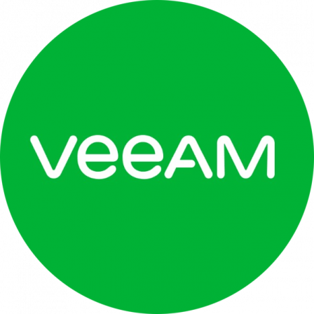

SYSTEMS & NETWORKS ENGINEER
With more than 8 years of experience. I'm
Would you like to improve the performance and security of your IT systems and ensure their longevity?
Feel free to contact me for support in this process
I am a systems and network engineer, specializing in the design and architecture of IT systems and networks. My experience enables me to implement customized technical solutions tailored to the needs of businesses. I handle infrastructure capacity planning, performance optimization, and the development of strategies for future growth.
know me more
Systems managementI can manage and maintain your IT systems, whether on Windows Server, Linux, or other platforms, to ensure their smooth operation and security. |
CybersecurityI can implement security measures to protect your data and systems from online threats, including configuring firewalls, monitoring vulnerabilities, and establishing security policies. |
NetworkingI can design, implement, and manage IT networks to ensure reliable and efficient connectivity within your organization. |
VirtualizationI can help you virtualize your servers and IT resources, which allows for optimized use of hardware resources, cost reduction, and increased flexibility of your infrastructure. |
Here are some solutions that will allow you to benefit from my expertise
Deploy your virtualization platform (SDDC) with VMware vSphereI can assist you in installing physical ESXi servers and configuring your VMware clusters. I am also ready to train your employees in the use of VMware vSphere for efficient use of your virtualization infrastructure....see more |
|
Deploy your Hyperconverged (HCI) solution with VMware vSANJe peux vous accompagner dans la conception, l'installation et la configuration de votre solution VMware vSAN. Cela inclut la création et l'optimisation des clusters vSAN pour garantir des performances élevées et une haute disponibilité. |
|
 | |
Implement your virtual network (SDN) with VMware NSXYou want to strengthen the security and flexibility of your infrastructure. I can assist you in the deployment of VMware NSX (Installation and configuration of NSX Manager, NSX Edge), whether for network segmentation, micro-segmentation or centralized management of security policies...see more |
|
Centralize management of your business with Active DirectoryI can help you develop a plan for setting up your Active Directory forest, installing your domain controllers, and configuring security settings to protect your data.I can also assist you in setting up group policies to manage permissions and security policies. Additionally, I can also help you set up a backup system to protect your Active Directory data....see more |
|
|  | |
Deploy your messaging solution with Microsoft ExchangeI can help you by configuring your mailbox servers, deploying an Edge server to protect your Front End servers and ensuring high availability of the database to avoid service interruptions....see more |
|
|  | |
Deploy your collaboration platform with Microsoft SharePointI can help you by deploying your SharePoint server set, installing and configuring the different components of your farm (application servers, front-end servers and SQL database server) and creating the SharePoint sites needed for your business (team sites, publishing sites, etc.)...see more |
|
Implement your video conferencing solution with Skype for BusinessI can set up Microsoft's Skype for Business on-premises video conferencing solution to meet your collaboration needs. This includes setting up a pool of Front End servers, an Edge server, and Office Web App. |
|
|  | |
Improve the performance of your network with CISCOI can configure your CISCO switches and routers according to your specific network connectivity and security needs. I can configure features such as VLANs, Port security and QoS. I can set up RIP, OSPF or EIGRP routing protocols. |
|
Secure your network with FortigateI can help you by setting up security policies, SDWAN, SSL and IPSec VPN connections, as well as managing advanced features such as user and security policy management, threat detection and prevention, network traffic analysis, and high availability configurations. |
|
|  | |
Ensure the availability of your data with VEEAMI can help you install and configure Veeam backup and replication to ensure the availability of your data, including real-time backup, replication of your servers, rapid restoration of your virtual machines, backup on storage array or on the cloud...see more |
|
Monitor your IT infrastructure with ZABBIX
I help you install and configure the server from A to Z. |
|
Passionate about new technologies since my youngest age, I decided to continue in this path by studying computer science at university. In 2014, I obtained my Master's degree in computer science from Mouloud Mammeri University in Tizi Ouzou, Algeria, with a specialization in Mobility Networks and Embedded Systems.
SKILLS
|
|